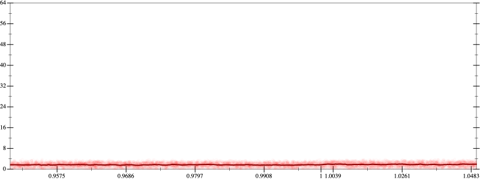
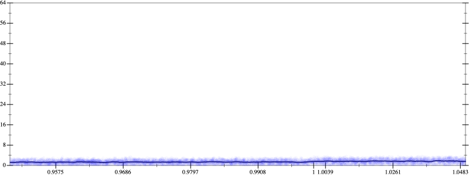
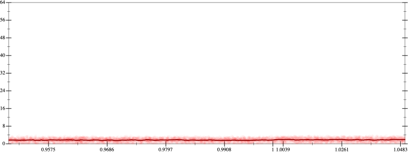
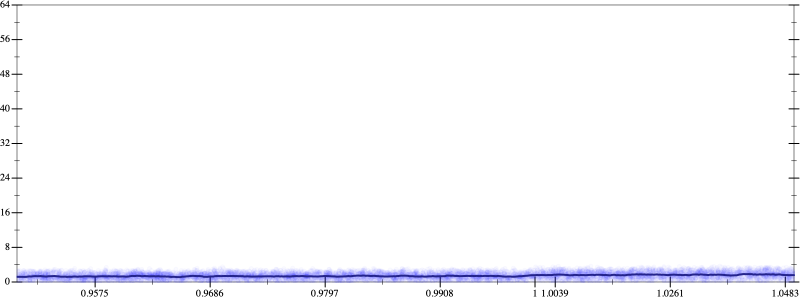

Initial program 1.7
\[\left(\left(\left(30240.0 \cdot x + -80640.0 \cdot \left(\left(x \cdot x\right) \cdot x\right)\right) + 48384.0 \cdot \left(\left(\left(\left(x \cdot x\right) \cdot x\right) \cdot x\right) \cdot x\right)\right) + -9216.0 \cdot \left(\left(\left(\left(\left(\left(x \cdot x\right) \cdot x\right) \cdot x\right) \cdot x\right) \cdot x\right) \cdot x\right)\right) + 512.0 \cdot \left(\left(\left(\left(\left(\left(\left(\left(x \cdot x\right) \cdot x\right) \cdot x\right) \cdot x\right) \cdot x\right) \cdot x\right) \cdot x\right) \cdot x\right)\]
- Using strategy
rm Applied associate-+l+1.7
\[\leadsto \left(\color{blue}{\left(30240.0 \cdot x + \left(-80640.0 \cdot \left(\left(x \cdot x\right) \cdot x\right) + 48384.0 \cdot \left(\left(\left(\left(x \cdot x\right) \cdot x\right) \cdot x\right) \cdot x\right)\right)\right)} + -9216.0 \cdot \left(\left(\left(\left(\left(\left(x \cdot x\right) \cdot x\right) \cdot x\right) \cdot x\right) \cdot x\right) \cdot x\right)\right) + 512.0 \cdot \left(\left(\left(\left(\left(\left(\left(\left(x \cdot x\right) \cdot x\right) \cdot x\right) \cdot x\right) \cdot x\right) \cdot x\right) \cdot x\right) \cdot x\right)\]
Applied simplify1.6
\[\leadsto \left(\left(30240.0 \cdot x + \color{blue}{\left(\left(48384.0 \cdot x\right) \cdot \left(x \cdot x\right) + -80640.0 \cdot x\right) \cdot \left(x \cdot x\right)}\right) + -9216.0 \cdot \left(\left(\left(\left(\left(\left(x \cdot x\right) \cdot x\right) \cdot x\right) \cdot x\right) \cdot x\right) \cdot x\right)\right) + 512.0 \cdot \left(\left(\left(\left(\left(\left(\left(\left(x \cdot x\right) \cdot x\right) \cdot x\right) \cdot x\right) \cdot x\right) \cdot x\right) \cdot x\right) \cdot x\right)\]
- Using strategy
rm Applied add-cbrt-cube1.6
\[\leadsto \left(\left(30240.0 \cdot x + \left(\left(48384.0 \cdot x\right) \cdot \left(x \cdot x\right) + -80640.0 \cdot x\right) \cdot \color{blue}{\sqrt[3]{\left(\left(x \cdot x\right) \cdot \left(x \cdot x\right)\right) \cdot \left(x \cdot x\right)}}\right) + -9216.0 \cdot \left(\left(\left(\left(\left(\left(x \cdot x\right) \cdot x\right) \cdot x\right) \cdot x\right) \cdot x\right) \cdot x\right)\right) + 512.0 \cdot \left(\left(\left(\left(\left(\left(\left(\left(x \cdot x\right) \cdot x\right) \cdot x\right) \cdot x\right) \cdot x\right) \cdot x\right) \cdot x\right) \cdot x\right)\]
Applied add-cbrt-cube1.6
\[\leadsto \left(\left(30240.0 \cdot x + \color{blue}{\sqrt[3]{\left(\left(\left(48384.0 \cdot x\right) \cdot \left(x \cdot x\right) + -80640.0 \cdot x\right) \cdot \left(\left(48384.0 \cdot x\right) \cdot \left(x \cdot x\right) + -80640.0 \cdot x\right)\right) \cdot \left(\left(48384.0 \cdot x\right) \cdot \left(x \cdot x\right) + -80640.0 \cdot x\right)}} \cdot \sqrt[3]{\left(\left(x \cdot x\right) \cdot \left(x \cdot x\right)\right) \cdot \left(x \cdot x\right)}\right) + -9216.0 \cdot \left(\left(\left(\left(\left(\left(x \cdot x\right) \cdot x\right) \cdot x\right) \cdot x\right) \cdot x\right) \cdot x\right)\right) + 512.0 \cdot \left(\left(\left(\left(\left(\left(\left(\left(x \cdot x\right) \cdot x\right) \cdot x\right) \cdot x\right) \cdot x\right) \cdot x\right) \cdot x\right) \cdot x\right)\]
Applied cbrt-unprod1.6
\[\leadsto \left(\left(30240.0 \cdot x + \color{blue}{\sqrt[3]{\left(\left(\left(\left(48384.0 \cdot x\right) \cdot \left(x \cdot x\right) + -80640.0 \cdot x\right) \cdot \left(\left(48384.0 \cdot x\right) \cdot \left(x \cdot x\right) + -80640.0 \cdot x\right)\right) \cdot \left(\left(48384.0 \cdot x\right) \cdot \left(x \cdot x\right) + -80640.0 \cdot x\right)\right) \cdot \left(\left(\left(x \cdot x\right) \cdot \left(x \cdot x\right)\right) \cdot \left(x \cdot x\right)\right)}}\right) + -9216.0 \cdot \left(\left(\left(\left(\left(\left(x \cdot x\right) \cdot x\right) \cdot x\right) \cdot x\right) \cdot x\right) \cdot x\right)\right) + 512.0 \cdot \left(\left(\left(\left(\left(\left(\left(\left(x \cdot x\right) \cdot x\right) \cdot x\right) \cdot x\right) \cdot x\right) \cdot x\right) \cdot x\right) \cdot x\right)\]
Applied simplify1.4
\[\leadsto \left(\left(30240.0 \cdot x + \sqrt[3]{\color{blue}{\left(\left(\left({x}^{3} \cdot {x}^{3}\right) \cdot x\right) \cdot \left(-80640.0 + \left(48384.0 \cdot x\right) \cdot x\right)\right) \cdot \left(\left(\left(48384.0 \cdot x\right) \cdot \left(x \cdot x\right) + -80640.0 \cdot x\right) \cdot \left(\left(48384.0 \cdot x\right) \cdot \left(x \cdot x\right) + -80640.0 \cdot x\right)\right)}}\right) + -9216.0 \cdot \left(\left(\left(\left(\left(\left(x \cdot x\right) \cdot x\right) \cdot x\right) \cdot x\right) \cdot x\right) \cdot x\right)\right) + 512.0 \cdot \left(\left(\left(\left(\left(\left(\left(\left(x \cdot x\right) \cdot x\right) \cdot x\right) \cdot x\right) \cdot x\right) \cdot x\right) \cdot x\right) \cdot x\right)\]
Taylor expanded around 0 1.3
\[\leadsto \left(\left(30240.0 \cdot x + \sqrt[3]{\left(\left(\left({x}^{3} \cdot {x}^{3}\right) \cdot x\right) \cdot \left(-80640.0 + \left(48384.0 \cdot x\right) \cdot x\right)\right) \cdot \left(\left(\left(48384.0 \cdot x\right) \cdot \left(x \cdot x\right) + -80640.0 \cdot x\right) \cdot \color{blue}{\left(48384.0 \cdot {x}^{3} - 80640.0 \cdot x\right)}\right)}\right) + -9216.0 \cdot \left(\left(\left(\left(\left(\left(x \cdot x\right) \cdot x\right) \cdot x\right) \cdot x\right) \cdot x\right) \cdot x\right)\right) + 512.0 \cdot \left(\left(\left(\left(\left(\left(\left(\left(x \cdot x\right) \cdot x\right) \cdot x\right) \cdot x\right) \cdot x\right) \cdot x\right) \cdot x\right) \cdot x\right)\]
Applied simplify1.5
\[\leadsto \color{blue}{\sqrt[3]{\left(\left(\left(x \cdot x\right) \cdot \left(x \cdot 48384.0\right) - 80640.0 \cdot x\right) \cdot \left(\left(x \cdot x\right) \cdot \left(x \cdot 48384.0\right) + -80640.0 \cdot x\right)\right) \cdot \left(\left(\left(x \cdot x\right) \cdot 48384.0 + -80640.0\right) \cdot \left(x \cdot \left({x}^{3} \cdot {x}^{3}\right)\right)\right)} + \left(\left(x \cdot \left({x}^{3} \cdot {x}^{3}\right)\right) \cdot \left(-9216.0 + \left(x \cdot x\right) \cdot 512.0\right) + 30240.0 \cdot x\right)}\]
- Using strategy
rm Applied distribute-lft-in1.5
\[\leadsto \sqrt[3]{\color{blue}{\left(\left(\left(x \cdot x\right) \cdot \left(x \cdot 48384.0\right) - 80640.0 \cdot x\right) \cdot \left(\left(x \cdot x\right) \cdot \left(x \cdot 48384.0\right)\right) + \left(\left(x \cdot x\right) \cdot \left(x \cdot 48384.0\right) - 80640.0 \cdot x\right) \cdot \left(-80640.0 \cdot x\right)\right)} \cdot \left(\left(\left(x \cdot x\right) \cdot 48384.0 + -80640.0\right) \cdot \left(x \cdot \left({x}^{3} \cdot {x}^{3}\right)\right)\right)} + \left(\left(x \cdot \left({x}^{3} \cdot {x}^{3}\right)\right) \cdot \left(-9216.0 + \left(x \cdot x\right) \cdot 512.0\right) + 30240.0 \cdot x\right)\]
Applied simplify1.4
\[\leadsto \sqrt[3]{\left(\left(\left(x \cdot x\right) \cdot \left(x \cdot 48384.0\right) - 80640.0 \cdot x\right) \cdot \left(\left(x \cdot x\right) \cdot \left(x \cdot 48384.0\right)\right) + \color{blue}{\left(\left(x \cdot -80640.0\right) \cdot x\right) \cdot \left(48384.0 \cdot \left(x \cdot x\right) - 80640.0\right)}\right) \cdot \left(\left(\left(x \cdot x\right) \cdot 48384.0 + -80640.0\right) \cdot \left(x \cdot \left({x}^{3} \cdot {x}^{3}\right)\right)\right)} + \left(\left(x \cdot \left({x}^{3} \cdot {x}^{3}\right)\right) \cdot \left(-9216.0 + \left(x \cdot x\right) \cdot 512.0\right) + 30240.0 \cdot x\right)\]
 
